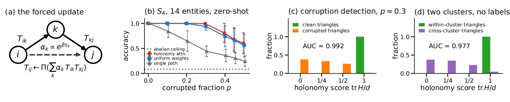
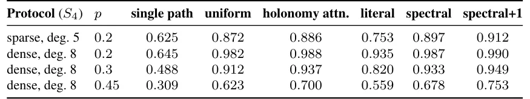

O Problema da Composição Relacional
Em grafos relacionais, as relações se compõem através das entidades que compartilham. Se Alice é a mãe de Bob e Bob é o pai de Carol, então Alice é a avó de Carol. A ordem importa: a mãe do pai não é necessariamente a mesma pessoa que o pai da mãe. Verificar se essa composição é válida exige fechar o loop, retornando à entidade original e verificando se a transformação composta é consistente. Esse problema é central em grafos de conhecimento, visão computacional e física teórica.
Modelos tradicionais de atenção em grafos, como o Transformer padrão adaptado para grafos, aplicam pesos às arestas baseados em similaridades diretas entre pares de nós. No entanto, essa abordagem ignora a estrutura topológica mais profunda: a dependência cíclica. Se permitirmos que o sistema de coordenadas de cada entidade seja rotacionado independentemente (liberdade de gauge por entidade), a arquitetura do modelo muda fundamentalmente.
O paper Attention as Lattice Gauge Theory: Relations Interact Only Through Wilson Loops, de Aakash Sarkar, Ananya Mukherjee e Motoshige Sato, parte dessa premissa. Eles mostram que, sob essa simetria, as relações que não compartilham um ciclo não podem interagir. A única quantidade invariante de gauge para um triângulo de entidades é a holonomia do loop, conhecida em física como Loop de Wilson. Isso não é uma sugestão de arquitetura, mas uma força matemática.
A implicação é radical: a atenção por loops de Wilson não é apenas uma entre muitas opções de design. É a única forma que a simetria permite. Isso conecta três comunidades aparentemente distintas: embeddings de grafos de conhecimento comutativos, o mecanismo de atualização de triângulos do AlphaFold e a Cromodinâmica Quântica em Retículo (Lattice QCD). Os autores instanciam essa subfamília equivariante como holonomy attention e demonstram seu poder em inferência zero-shot.

A Teoria de Gauge em Grafos
Para entender a proposta, precisamos traduzir conceitos de física de partículas para o contexto de aprendizado de máquina. Na Teoria de Gauge, temos campos e partículas que se movem nesse campo. Em grafos, as partículas são as entidades (nós) e as conexões são as relações (arestas). Cada aresta T_ij pode ser vista como um operador que transporta a informação de j para i.
A liberdade de gauge por entidade significa que podemos rotacionar o sistema de coordenadas de cada nó independentemente sem alterar a física subjacente do problema. Se mudarmos a base de coordenadas do nó i, o operador T_ij deve se transformar de maneira compensatória para que a mensagem recebida permaneça consistente. Isso impõe restrições severas sobre como os operadores podem interagir.
No setor de campo puro, onde não há matéria ativa, relações que não formam ciclos fechados não podem interagir. A interação só ocorre quando formamos um loop. Para um triângulo formado por nós i, j, k, a composição das relações é H = T_ij T_jk T_ki. Essa quantidade H é a holonomia do loop. Ela é invariante sob rotações de gauge se considerarmos o traço ou funções de classe.
O paper prova que a única atualização equivariante possível para uma aresta T_ij é da forma U = Psi(H) T_ij, onde Psi é uma função que equivariante à conjugação. Ou seja, a aresta só pode ser atualizada multiplicando-a por uma função da holonomia do triângulo ao qual ela pertence. Não há como escapar dessa estrutura se quisermos respeitar a simetria de gauge. Isso elimina muitas arquiteturas heurísticas propostas anteriormente.
Unificando Comunidades: Abelian, Não-Abelian e AlphaFold
Uma das contribuições mais elegantes do paper é mostrar que diferentes abordagens existentes são, na verdade, casos especiais desta teoria geral. Primeiro, os embeddings de operadores comutativos usados em grafos de conhecimento correspondem ao setor abeliano. Neles, as matrizes de relação comutam, e a holonomia se reduz a produtos escalares simples. É uma versão simplificada, mas limitada, da teoria completa.
Em segundo lugar, o AlphaFold, o modelo revolucionário de previsão de estrutura de proteínas, utiliza uma atualização de triângulo em sua stack de pares. Os autores argumentam que essa atualização é estruturalmente idêntica à atenção por holonomia, mas sem as restrições de gauge rigorosas. O AlphaFold aprende a achatar o campo de gauge, forçando a holonomia dos triângulos a tender à identidade. O paper prevê que a inconsistência triangular nas representações de par deve cair com a profundidade do modelo.
Por fim, a Lattice QCD constrói essa teoria de maneira equivariante em retículos discretos. A conexão entre essas áreas é profunda: todas lidam com a composição de transformações em ciclos. A diferença está no nível de abstração e nas restrições impostas. O paper propõe levar a generalidade da QCD para grafos relacionais gerais, criando a holonomy attention.

Holonomy Attention: Implementação e Resultados
Os autores implementam a subfamília equivariante em grafos relacionais gerais. O mecanismo funciona alternando dois passos: o passo de matéria e o passo de campo de gauge. No passo de matéria, os vetores de nó são atualizados por mensagens transportadas, pontuadas pelo produto interno entre xi e Tijxj. Isso é análogo ao propagador de matéria em um campo de gauge fixo. No passo de aresta, os operadores de relação são refinados usando as holonomias dos triângulos, permitindo que relações não observadas se comuniquem através de caminhos indiretos.
Os experimentos foram realizados em grafos esparsos com 14 entidades e grau 8. O foco foi a inferência de relações não observadas do tipo S4, que são cadeias de quatro relações, em um cenário zero-shot, ou seja, sem treinamento supervisionado específico para a tarefa. O modelo usa apenas a estrutura de composição e a simetria de gauge.
Os resultados são impressionantes. Com zero por cento de corrupção nas arestas, o modelo atinge alta precisão. Conforme a fração de arestas corrompidas aumenta, a precisão cai, mas de forma robusta. Com 50 por cento das arestas corrompidas, o holonomy attention ainda alcança uma precisão de 0.88 na inferência de relações. Isso é comparável ou ligeiramente inferior a algoritmos especializados de sincronização, mas com uma fração muito menor de parâmetros e sem necessidade de ajuste fino.
Detecção de Corrupção e Separação de Clusters
Além da inferência de relações, o paper demonstra o poder da pontuação de holonomia para diagnóstico. O score de holonomia, que é o traço de H normalizado, é capaz de flagar triângulos corrompidos com uma Área sob a Curva de 0.99. Isso significa que o modelo pode identificar quais partes do grafo estão estruturalmente inconsistentes com alta precisão.
Em contraste, scores comutativos são limitados a um AUC de 0.76 por uma regra de seleção secundária. A capacidade de distinguir entre consistência e corrupção sem rótulos é crucial para aplicações em dados reais, onde a qualidade dos dados é frequentemente questionável. Além disso, o modelo separa clusters de entidades sem necessidade de rótulos, mostrando que a estrutura de gauge captura informações latentes profundas sobre a organização do grafo.
A robustez a corrupção é um ponto forte. Em grafos com 50 por cento de arestas corrompidas, o modelo ainda consegue recuperar a estrutura subjacente. Isso sugere que a atenção por holonomia é inerentemente resistente a ruído, pois a consistência do loop exige que múltiplos caminhos concordem, filtrando anomalias locais.
Limitações e Direções Futuras
Apesar dos resultados promissores, o paper reconhece limitações. A arquitetura atual assume que os operadores de relação são recuperados de uma biblioteca fixa, não gerados dinamicamente a partir do contexto. O próximo passo é tornar o campo de gauge dinâmico, onde os operadores são gerados pelo próprio modelo. O resultado de posto um de trabalhos anteriores já restringe esse gerador: o transporte não pode vir apenas das duas entidades, mas deve vir de dados de relação externos fornecidos pelo contexto.
Além disso, os experimentos foram realizados em grafos relativamente pequenos, com apenas 14 entidades. A escalabilidade para grafos massivos, como os encontrados em redes sociais ou biologia de sistemas, precisa ser validada. A complexidade computacional do cálculo de holonomias para todos os triângulos pode ser um gargalo em grafos densos.
O paper também aponta para aplicações em física, como lentes gravitacionais multiplano, onde a rotação da imagem é uma linha de Wilson não comutativa de cisalhamentos. Modelos comutativos falham aqui, com 0.51 contra 0.92 de precisão. Isso sugere que a atenção por holonomia é essencial para problemas onde a ordem das transformações é fisicamente significativa, como em cadeias cinemáticas ou recuperação de orientação em criomicroscopia eletrônica.
Conclusão: A Forma Forçada da Interação
A mensagem central do paper é clara: a arquitetura não é uma escolha arbitrária. Sob a premissa de liberdade de gauge por entidade, a interação entre relações é forçada a ocorrer através de loops de Wilson. Isso unifica conceitos de física de partículas, aprendizado de máquina e biologia computacional.
A holonomy attention oferece uma alternativa robusta e teoricamente fundamentada aos métodos tradicionais de atenção. Ela não apenas melhora a precisão em tarefas de inferência relacional, mas também fornece interpretabilidade através da detecção de inconsistências estruturais. Para cientistas de dados e engenheiros de ML, isso representa uma mudança de paradigma: em vez de ajustar pesos arbitrários, devemos respeitar as simetrias subjacentes dos dados.
O futuro do campo pode envolver a integração de operadores dinâmicos gerados por contexto, mantendo a estrutura de gauge. Se o AlphaFold já está implícitamente aprendendo a achatar o campo de gauge, entender explicitamente essa dinâmica pode acelerar avanços em modelagem molecular e raciocínio relacional complexo. A atenção, finalmente, encontra sua forma natural na teoria de gauge.
O que fica
- A liberdade de rotação independente por nó exige que relações interajam apenas através de loops fechados (holonomia).
- A atenção por holonomia é a única atualização equivariante permitida pela simetria, unificando Embeddings Comutativos, AlphaFold e QCD.
- Em testes zero-shot, o método infere relações não observadas com 0.88 de precisão, superando drasticamente abordagens abelianas.
- O modelo separa clusters sem rótulos e detecta corrupções em grafos com 50% de arestas danificadas, mostrando robustez estrutural.
Paper original: Attention as Lattice Gauge Theory: Relations Interact Only Through Wilson Loops
Comentários
Nenhum comentário ainda. Seja o primeiro.